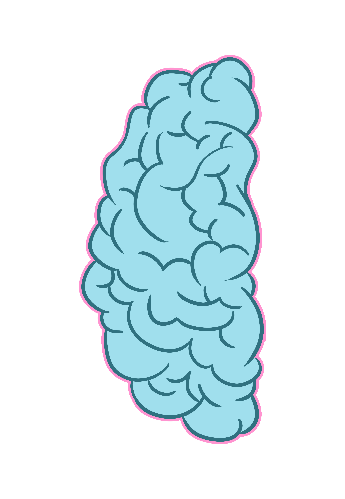
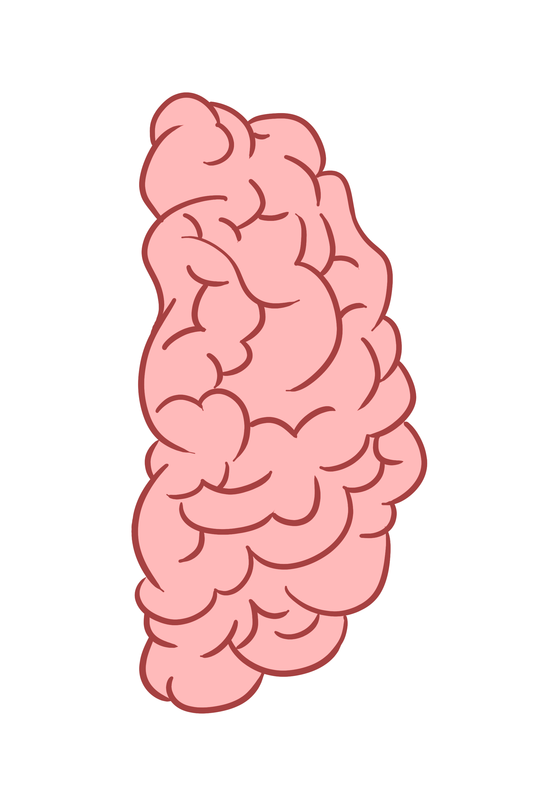

О игре
Интуиция
листайте вниз чтобы узнать больше!

Что же такое интуиция?
-Это способность подсознания за долю секунды анализировать обстановку и находить оптимальные решения, причем без долгих рассуждений и скрупулезных выводов.
Интуиция ,просторами словами-это предчувствие, которое основывается на опыте и знаниях, причем без раздумий откуда они получены. Иначе говоря, необоснованное доказательствами моментальное постижение истины.

Виды Интуиции
Но их может быть больше или меньше,поскольку психологи только изучают правое полушарие головного мозга
1. Стратегическая интуиция - это единственный вид шестого чувства, который медленно активизируется, когда требуются новые подходы или креативные идеи, но возникает неожиданно, как внезапное прозрение. Этот вид интуиции подразделяется на три типа: научную, творческую и профессиональную.
2. Интуиция опыта - это способность чутья работать в повторяющихся условиях и активизироваться немедленно. Например, в сложных производственных ситуациях или при проведении мозгового штурма, внутренний голос особенно отчетливо проявляется у людей с опытом работы от 5 лет.
3. Физическая интуиция - подсказки поступают в виде эмоций, таких как ухудшение настроения или наоборот - воодушевление, недомогание или отличное самочувствие и прилив сил. По этим сигналам можно сделать выводы о потенциальном успехе или провале предприятия.
4. Эмоциональная интуиция - она мгновенно предупреждает о возможной опасности или о чем-то "неизвестном". Сигналы интуиции передаются через чувство страха, необъяснимую тревогу или беспокойство. Считается, что этот вид интуиции является самым сильным и происходит от наших первобытных предков.
5. Социальная интуиция - это способность правильно понимать чувства, намерения, потребности и мотивы поведения людей, даже по малозаметным сигналам. Например, по изменениям в интонации и высоте голоса, а также по невербальным признакам, таким как движение глаз, мимика и жесты.
У нас есть два полушария,правое и левое. У каждого человека оно развито по-разному. У кого-то больше правая ,у кого-то левая.

Левое Полушарие
Мозга отвечает за:
. логику и развитие интеллектуального коэффициент (IQ);
. аналитический подход при решении задач и проблем;
. последовательную и поэтапную обработку информации;
. углубление в детали и скрупулезность их осмысления;
. формирование представлений о предметах по элементам;
. логический подход при осмыслении вводных данных;
. запоминание связей, схем, графиков и систем;
. четкое фиксирование в памяти дат, имен, фактов;
. распознавание символов и чисел, но не запоминание лиц;
. контроль речи, чтения, письма, склонность пояснениям;
. буквальное восприятие смысла услышано или прочитано.
Левое полушарие обычно ещё отвечает за лингвистические данные.
Бывало ли такое,что вы думаете ,что точно ответ,выбранный вами -неверный. А в итоге оказывается все наоборот,чаще всего отвечает левое полушарие за это. Т.к чаще вы не на бум тыкаете,а выбираете методом исключения.
Правое Полушарие
Мозга отвечает за:
. интуицию и развитие эмоционального интеллекта (EQ);
. запоминание эмоций, чувств, опыта;
. идентификацию лиц, предметов и объектов;
. понимание метафор, тонких намеков и юмора;
. «прокачку» невербальных символов и образов;
. обработку данных без осознанного анализа;
. ориентацию во времени, на местности и в пространстве;
. способности к различным видам искусства;
. умение мечтать, фантазировать и сочинять;
. навык говорить коротко, расставляя акценты интонацией;
. веру в божественное провидение, судьбу и мистику.
Правое полушарие ещё отвечает творчество.
А теперь проверим вашу интуицию с помощью игры!
ИГРАТЬ 